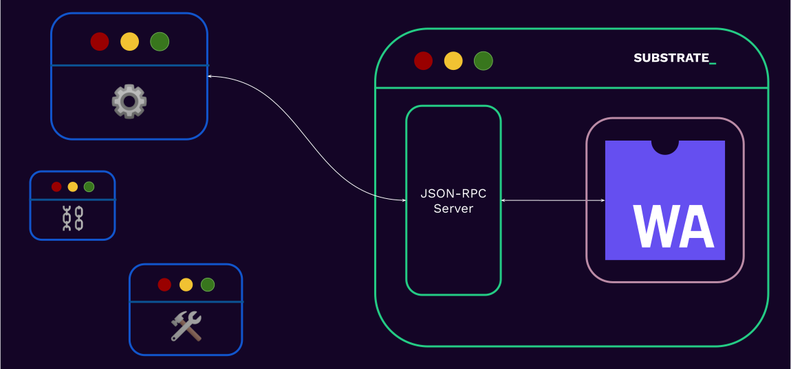

<!DOCTYPE html>
<html lang="en">

<head>
  <meta charset="utf-8" />
  <meta name="viewport" content="width=device-width, initial-scale=1.0, maximum-scale=1.0, user-scalable=no" />

  <title>Interacting With a Substrate Blockchain</title>
  <link rel="icon" href="./../../assets/favicon.svg" />
  <link rel="shortcut icon" href="./../../assets/favicon.png" />
  <link rel="stylesheet" href="./../../dist/reset.css" />
  <link rel="stylesheet" href="./../../dist/reveal.css" />
  <link rel="stylesheet" href="./../.././assets/styles/PBA-theme.css" id="theme" />
  <link rel="stylesheet" href="./../../css/highlight/shades-of-purple.css" />

  <link rel="stylesheet" href="./../.././assets/styles/custom-classes.css" />

</head>

<body class="site">
  <header class="site-header">
    <!-- This logo is a link only on the watching server, not the production build -->
    <a href="">
      
    </a>
  </header>
  <main class="reveal">
    <article class="slides">
      <section  data-markdown><script type="text/template">

# Interacting With a Substrate Blockchain
</script></section><section  data-markdown><script type="text/template">
## Before we start

Find all the commands that will be used in this workshop:
[tinyurl.com/hk24-substrate](https://hackmd.io/@ak0n/hk24-substrate-interaction)
 </script></section><section  data-markdown><script type="text/template">
## Before we start

- Clone polkadot-sdk

```sh
git clone https://github.com/paritytech/polkadot-sdk.git
```

<br/>

- Compile your node

```sh
cargo build --release -p minimal-node
```
</script></section><section ><section data-markdown><script type="text/template">
## Interacting With a Substrate Blockchain

> How does a user or an application interact with a blockchain?

<aside class="notes"><ul>
<li>Wait for 1 answer from students or at least for 10 seconds.</li>
</ul>
</aside></script></section><section data-markdown><script type="text/template">
## Interacting With a Substrate Blockchain

- Usually they connect to a public RPC server, i.e. a substrate node that exposes its RPC interface publicly.

<br/>

- Run their own node.

<!-- .element: class="fragment" -->
</script></section><section data-markdown><script type="text/template">
## Interacting With a Substrate Blockchain


</script></section></section><section ><section data-markdown><script type="text/template">
## JSON-RPC

> JSON-RPC is a remote procedure call protocol encoded in JSON. It is similar to the XML-RPC
> protocol, defining only a few data types and commands.
</script></section><section data-markdown><script type="text/template">
### JSON-RPC

```json
{
  "jsonrpc": "2.0",
  "method": "subtract",
  "params": {
    "minuend": 42,
    "subtrahend": 23
  },
  "id": 3
}
```

<br/>

```json
{
  "jsonrpc": "2.0",
  "result": 19,
  "id": 3
}
```

<!-- .element: class="fragment" -->
</script></section><section data-markdown><script type="text/template">
### JSON-RPC

- Entirely transport agnostic.
- Substrate based chains expose both `websocket` and `http` (or `wss` and `https`, if desired).

<aside class="notes"><ul>
<li>You could choose which port to run the ws or http server on by using the flags <code>--ws-port</code> and <code>--rpc-port</code>
respectively. By default, port 9944 is used.</li>
</ul>
</aside></script></section><section data-markdown><script type="text/template">
### JSON-RPC

The RPC methods that a substrate node exposes are scoped and has the pattern `"<scope>_<method>"`.

```sh
 wscat \
  -c ws://localhost:9944 \
  -x '{"jsonrpc":"2.0", "id": 42, "method":"rpc_methods" }' \
  | jq
```
</script></section><section data-markdown><script type="text/template">
### JSON-RPC: Scopes

- &shy;<!-- .element: class="fragment" --> `author`: for submitting extrinsic to the chain.
- &shy;<!-- .element: class="fragment" --> `chain`: for retrieving information about the _blockchain_ data.
- &shy;<!-- .element: class="fragment" --> `state`: for retrieving information about the _state_ data.
- &shy;<!-- .element: class="fragment" --> `system`: information about the chain.
- &shy;<!-- .element: class="fragment" --> `rpc`: information about the RPC endpoints.

<aside class="notes"><p>recall:</p>
<p><a href="https://paritytech.github.io/substrate/master/sc_rpc_api/index.html">https://paritytech.github.io/substrate/master/sc_rpc_api/index.html</a>
<a href="https://paritytech.github.io/substrate/master/sc_rpc/index.html">https://paritytech.github.io/substrate/master/sc_rpc/index.html</a></p>
<ul>
<li>The full list can also be seen here: <a href="https://polkadot.js.org/docs/substrate/rpc/">https://polkadot.js.org/docs/substrate/rpc/</a></li>
<li>Specs: <a href="https://paritytech.github.io/json-rpc-interface-spec/introduction.html">https://paritytech.github.io/json-rpc-interface-spec/introduction.html</a></li>
<li>Upcoming changes to JSON-RPC api: <a href="https://forum.polkadot.network/t/new-json-rpc-api-mega-q-a/3048">https://forum.polkadot.network/t/new-json-rpc-api-mega-q-a/3048</a></li>
</ul>
</aside></script></section></section><section ><section data-markdown><script type="text/template">
### Workshop: Intro

- Transfer tokens from Alice to Bob.

<br/>

- We will cheat a bit and take help sometimes from [Polkadot.js app](https://polkadot.js.org/apps/#/explorer).

<!-- .element: class="fragment" -->

<aside class="notes"><ul>
<li>When we start up a dev chain, some well known accounts are already minted some balance at genesis. We will use Alice
and Bob which are well known accounts.</li>
<li>The parts we cheat is because we will need to know more about FRAME to be able to calculate some storage keys.</li>
</ul>
</aside></script></section><section data-markdown><script type="text/template">
### Workshop: Spin up your node

- Check out cli docs
```sh
./target/release/minimal-node --help
```

<br/>

- Spin up your dev node.
```sh
./target/release/minimal-node --chain=dev --tmp
```

<!-- .element: class="fragment" -->

<aside class="notes"><ul>
<li>What does --chain=dev and --tmp do? What other flag can you use?</li>
</ul>
</aside></script></section><section data-markdown><script type="text/template">
### Workshop: Check balance

- Query current balance of Alice and Bob.

```sh
wscat \
  -c ws://localhost:9944 \
  -x '{"jsonrpc":"2.0", "id": 42, "method":"state_getStorage", "params": [""] }' \
  | jq
```

<aside class="notes"><ul>
<li>You will learn how the storage key is calculated in FRAME based substrate chains in the FRAME module.</li>
<li>What do you get?</li>
</ul>
</aside></script></section><section data-markdown><script type="text/template">
### Workshop: Metadata

- Recall type information is lost in SCALE encoded data.
- Substrate exposes type information using metadata.

```sh
wscat \
  -c ws://localhost:9944 \
  -x '{"jsonrpc":"2.0", "id": 42, "method":"state_getMetadata" }' \
  | jq
```

<br/>

- This itself is Scale Encoded. See [frame-metadata](https://github.com/paritytech/frame-metadata).
- Derive type of AccountInfo using this metadata.

<!-- .element: class="fragment" -->

<aside class="notes"><ul>
<li>Use PJS app to get frame-metadata: Developer &gt; RPC Calls &gt; state &gt; getMetadata.</li>
<li><a href="https://hackmd.io/@ak0n/rJUhmXmK6">Metadata</a> with most details not relevant stripped off.</li>
<li>Read more about
metadata: <a href="https://docs.substrate.io/build/application-development/#exposing-runtime-information-as-metadata">https://docs.substrate.io/build/application-development/#exposing-runtime-information-as-metadata</a>.</li>
</ul>
</aside></script></section><section data-markdown><script type="text/template">
### Workshop: Decoding balance

- Use [scale decoder](https://www.shawntabrizi.com/substrate-js-utilities/codec/) to decode balance.
- Use the following type information for AccountInfo.

```json
{
  "info": {
    "nonce": "u32",
    "ignore": "(u32, u32, u32)",
    "balance": {
      "free": "u64",
      "ignore": "(u64, u64, u128)"
    }
  }
}
```

<aside class="notes"><p>The actual type is:</p>
<pre><code class="language-json">{
  &quot;info&quot;: {
    &quot;nonce&quot;: &quot;u32&quot;,
    &quot;ignore&quot;: &quot;u32&quot;,
    &quot;providers&quot;: &quot;u32&quot;,
    &quot;sufficients&quot;: &quot;u32&quot;,
    &quot;balance&quot;: {
      &quot;free&quot;: &quot;u64&quot;,
      &quot;reserved&quot;: &quot;u64&quot;,
      &quot;frozen&quot;: &quot;u64&quot;,
      &quot;flags&quot;: &quot;u128&quot;
    }
  }
}
</code></pre>
</aside></script></section><section data-markdown><script type="text/template">
### Workshop: Transfer some tokens

- &shy;<!-- .element: class="fragment" --> Take PJS help to get the signed extrinsic.
- &shy;<!-- .element: class="fragment" --> Use the following command to submit the extrinsic.
```sh
wscat \
  -c ws://localhost:9944 \
  -x '{"jsonrpc":"2.0", "id": 42, "method":"author_submitExtrinsic", "params": [""] }' \
  | jq
```
- &shy;<!-- .element: class="fragment" --> Check balance again for both accounts.
- &shy;<!-- .element: class="fragment" --> What happens to nonce of Alice?

<aside class="notes"><ul>
<li>Students will learn how to build the signed extrinsic themselves in their assignment.</li>
<li>Let students do the second part themselves.</li>
</ul>
</aside></script></section><section data-markdown><script type="text/template">
### Workshop: Versions

- Find runtime version of the polkadot and westend chain `state_getRuntimeVersion`.
- Find node version of the polkadot and westend chain `system_version`.
- Change RPC provider and see if any of the above value changes?

<br/>

- For runtime version, you read `specVersion` : `1,005,000` as `1.5.0`.

<!-- .element: class="fragment" -->

<aside class="notes"><ul>
<li><code>wscat -c wss://polkadot-rpc.dwellir.com -x &#39;{&quot;jsonrpc&quot;:&quot;2.0&quot;, &quot;id&quot;:1, &quot;method&quot;:&quot;state_getRuntimeVersion&quot;}&#39; | jq</code>.</li>
<li><code>wscat -c wss://polkadot-rpc.dwellir.com -x &#39;{&quot;jsonrpc&quot;:&quot;2.0&quot;, &quot;id&quot;:1, &quot;method&quot;:&quot;system_version&quot;}&#39; | jq</code>.</li>
<li>Show polkadot telemetry: <a href="https://telemetry.polkadot.io/">https://telemetry.polkadot.io/</a>.</li>
</ul>
</aside></script></section></section><section  data-markdown><script type="text/template">
### JSON-RPC: Application

- On top of `SCALE` and `JSON-RPC`, a large array of libraries have been built.

- &shy;<!-- .element: class="fragment" --> `PJS-API` / `PJS-APPS`
- &shy;<!-- .element: class="fragment" --> `subxt`
- &shy;<!-- .element: class="fragment" --> Any many more!

<aside class="notes"><p><a href="https://github.com/JFJun/go-substrate-rpc-client">https://github.com/JFJun/go-substrate-rpc-client</a>
<a href="https://github.com/polkascan/py-substrate-interface">https://github.com/polkascan/py-substrate-interface</a>
more here: <a href="https://project-awesome.org/substrate-developer-hub/awesome-substrate">https://project-awesome.org/substrate-developer-hub/awesome-substrate</a>
Listen to James Wilson introducing subxt: <a href="https://www.youtube.com/watch?v=aFk6We_Ke1I">https://www.youtube.com/watch?v=aFk6We_Ke1I</a></p>
</aside></script></section><section  data-markdown><script type="text/template">
## Additional Resources! 😋

> Check speaker notes (click "s" 😉)

<aside class="notes"><ul>
<li>see &quot;Client Libraries&quot; here: <a href="https://project-awesome.org/substrate-developer-hub/awesome-substrate">https://project-awesome.org/substrate-developer-hub/awesome-substrate</a></li>
<li><a href="https://paritytech.github.io/json-rpc-interface-spec/introduction.html">https://paritytech.github.io/json-rpc-interface-spec/introduction.html</a></li>
<li>Full subxt guide: <a href="https://docs.rs/subxt/latest/subxt/book/index.html">https://docs.rs/subxt/latest/subxt/book/index.html</a></li>
</ul>
</aside></script></section><section  data-markdown><script type="text/template">
### JSON-RPC: Mini Activity

In Kusama:

- Find the genesis hash..
- Number of extrinsics at block 10,000,000.
- The block number is stored under `twox128("System") ++ twox128("Number")`.
- Find it now, and at block 10,000,000.

<br/>

- Refer to the "Substrate; Show Me The Code" lecture to find the right RPC endpoints.
- You have 15 minutes!

<aside class="notes"><pre><code class="language-sh"># 10,000,000 in hex
printf &quot;%x\n&quot; 10000000
# Genesis hash
wscat -c wss://kusama-rpc.polkadot.io -x &#39;{&quot;jsonrpc&quot;:&quot;2.0&quot;, &quot;id&quot;:72, &quot;method&quot;:&quot;chain_getBlockHash&quot;, &quot;params&quot;: [&quot;0x0&quot;] }&#39; | jq
# Hash of the block at height 10,000,000
wscat -c wss://kusama-rpc.polkadot.io -x &#39;{&quot;jsonrpc&quot;:&quot;2.0&quot;, &quot;id&quot;:72, &quot;method&quot;:&quot;chain_getBlockHash&quot;, &quot;params&quot;: [&quot;0x989680&quot;] }&#39; | jq
# The block at height 1,000,000
wscat -c wss://kusama-rpc.polkadot.io -x &#39;{&quot;jsonrpc&quot;:&quot;2.0&quot;, &quot;id&quot;:72, &quot;method&quot;:&quot;chain_getBlock&quot;, &quot;params&quot;: [&quot;0xdcbaa224ab080f2fbf3dfc85f3387ab21019355c392d79a143d7e50afba3c6e9&quot;] }&#39; | jq

# `0x26aa394eea5630e07c48ae0c9558cef702a5c1b19ab7a04f536c519aca4983ac` now.
wscat -c wss://kusama-rpc.polkadot.io -x &#39;{&quot;jsonrpc&quot;:&quot;2.0&quot;, &quot;id&quot;:72, &quot;method&quot;:&quot;state_getStorage&quot;, &quot;params&quot;: [&quot;0x26aa394eea5630e07c48ae0c9558cef702a5c1b19ab7a04f536c519aca4983ac&quot;] }&#39; | jq
# `0x26aa394eea5630e07c48ae0c9558cef702a5c1b19ab7a04f536c519aca4983ac` at block 1,000,000.
wscat -c wss://kusama-rpc.polkadot.io -x &#39;{&quot;jsonrpc&quot;:&quot;2.0&quot;, &quot;id&quot;:72, &quot;method&quot;:&quot;state_getStorage&quot;, &quot;params&quot;: [&quot;0x26aa394eea5630e07c48ae0c9558cef702a5c1b19ab7a04f536c519aca4983ac&quot;, &quot;0xdcbaa224ab080f2fbf3dfc85f3387ab21019355c392d79a143d7e50afba3c6e9&quot;] }&#39; | jq
</code></pre>
<p>Notice that this number that we get back is the little endian (SCALE) encoded value that we passed in at first.</p>
</aside></script></section><section  data-markdown><script type="text/template">
## `subxt`

- Something analogous to `PJS api` for Rust.
- The real magic is that it generates the types by fetching the metadata at compile time, or linking
  it statically.
- ..It might need manual updates when the code, and therefore the metadata changes.
</script></section>
    </article>
  </main>

  <script src="./../../dist/reveal.js"></script>

  <script src="./../../plugin/markdown/markdown.js"></script>
  <script src="./../../plugin/highlight/highlight.js"></script>
  <script src="./../../plugin/zoom/zoom.js"></script>
  <script src="./../../plugin/notes/notes.js"></script>
  <script src="./../../plugin/math/math.js"></script>

  <script src="./../../assets/plugin/mermaid.js"></script>
  <script src="./../../assets/plugin/mermaid-theme.js"></script>

  <script src="./../../assets/plugin/chart/chart.js"></script>
  <script src="./../../assets/plugin/chart/chart.min.js"></script>

  <script src="./../../assets/plugin/tailwindcss.min.js"></script>

  <script>
    function extend() {
      var target = {};
      for (var i = 0; i < arguments.length; i++) {
        var source = arguments[i];
        for (var key in source) {
          if (source.hasOwnProperty(key)) {
            target[key] = source[key];
          }
        }
      }
      return target;
    }

    // default options to init reveal.js
    var defaultOptions = {
      controls: true,
      progress: true,
      history: true,
      center: true,
      transition: 'default', // none/fade/slide/convex/concave/zoom
      slideNumber: true,
      mermaid: {
        startOnLoad: false,
        logLevel: 3,
        theme: 'base',
        themeVariables: {
          primaryColor: purple,
          primaryTextColor: white,
          primaryBorderColor: pink,
          lineColor: pink,
          secondaryColor: lightPurple,
          tertiaryColor: lightPurple,
        },
      },
      chart: {
        defaults: {
          color: 'lightgray', // color of labels
          scale: {
            beginAtZero: true,
            ticks: { stepSize: 1 },
            grid: { color: "lightgray" }, // color of grid lines
          },
        },
        line: { borderColor: ["#ccc", "#E6007A", "#6D3AEE"], "borderDash": [[5, 10], [0, 0]] },
        bar: { backgroundColor: ["#ccc", "#E6007A", "#6D3AEE"] },
      },
      plugins: [
        RevealMarkdown,
        RevealHighlight,
        RevealZoom,
        RevealNotes,
        RevealMath,
        RevealMermaid,
        RevealChart
      ]
    };

    // options from URL query string
    var queryOptions = Reveal().getQueryHash() || {};

    var options = extend(defaultOptions, {"width":1400,"height":900,"margin":0,"minScale":0.2,"maxScale":2,"transition":"none","controls":true,"progress":true,"center":true,"slideNumber":true,"backgroundTransition":"fade"}, queryOptions);
  </script>


  <script>
    Reveal.initialize(options);
  </script>
</body>

</html>
